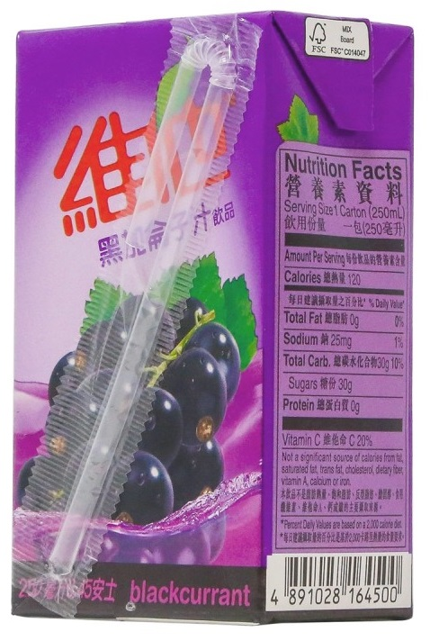
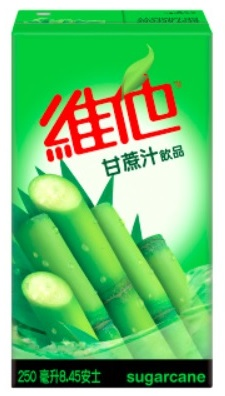

My boyfriend, Joshua Lin, and I enjoy trying different juices. I'm using the term "juice" very broadly. Here is my current juice ranking:
| Rank | Type of Juice | Thoughts |
|---|---|---|
| 1 | |
The perfect drink. It just tates really cute. Strawberry milk has always been the superior flavor of milk and anyone who says otherwise is a big dummy. In elementary school I would eat lunch and everyday I would choose to drink strawberry milk. Chocolate is overrated and unflavored milk is just boring. One day they stopped offering strawberry milk. I was really sad. Also my student ID for elementary through high school was 2166663. I thought it was cool that my lunch number had so many 6's in it. Other kids would always ask me "is that really your number" and I would reply "yes." I miss the inoccent days of my youth. |
| 2 | |
Absolutely delicious. The flavor is light and sweet. No complaints. |
| 3 | Very novel flavor. It tastes very cute but like green. | |
| 4 | Nice delicate flavor. Tangy and Sweet. Very refreshing. | |
| 5 |  | Refreshing and enjoyable. Josh says it tastes just like "Ribena." I've never had "Ribena" but I assume it just tastes like normal grab juice which is what this tasted like. |
| 6 | I'm not really sure what "malt" is but this tastes pretty good. It has a very earthy flavor. It's a little weird though. | |
| 7 | |
I'm not a particularly big fan of mango nectar. It't too thick and sugary for me. This was just a standard mango nectar. Nothing particularly exciting. |
| 8 |  | This shit tastes like drity grass water. I wasn't able to finish a single juice box. It was so disgusting??? How can anyone drink this??????? |